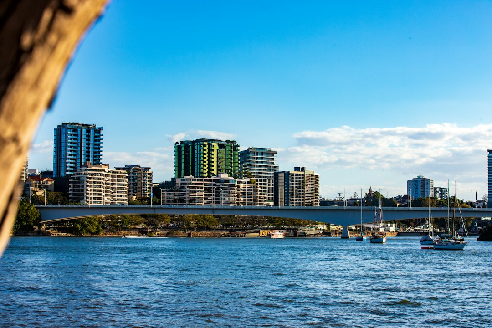

For a Brisbane small business site, the published guide gives a common brochure-site range of about $2,500 to $7,500, with more polished lead-focused builds closer to $7,500 to $15,000. Simple brochure sites are commonly around 4 to 10 weeks, WordPress or small business builds around 6 to 10 weeks, and eCommerce or custom work can run from about 12 weeks to several months, depending on scope, content and feedback.
For Brisbane owners comparing web design brisbane options, the useful starting point is not decoration, it is scope, budget, platform choice and how the finished site will turn search traffic into enquiries.
Web Design Brisbane Explained
Web Design Brisbane Australia frames a new website around business goals, the customers a company wants to reach across Brisbane, indicative pricing and a staged process. That is a useful lens for any quote conversation, because two projects can both be called a website while needing very different planning, copy, design, platform work and launch support.
Before comparing proposals, write down what the site must do. A sole trader may need a clear service page, contact form and suburb signal. A growing company may need service clusters, landing pages for Google Ads, editable WordPress sections and a structure that can expand later. An online store adds product, checkout, trust and performance questions through Shopify or WooCommerce.
- Outcome: decide whether the priority is enquiries, online sales, campaign leads, easier updates or a redesign that protects existing rankings.
- Platform: ask whether WordPress, Shopify, WooCommerce or a custom approach best fits the way the team will maintain the site.
- Content: confirm who supplies words, images, service detail and approval feedback, because timing depends heavily on that input.
- Ownership: confirm that the website and domain remain yours, and that training is included if you want to make edits yourself.
How Cost Changes With Scope
The published price guidance separates smaller brochure sites from more polished, lead-focused builds and heavier custom or eCommerce work. The numbers are indicative, not a fixed menu, so the quote should explain what is included, what is optional and what would trigger extra work.
A practical quote should make the difference between design labour and strategic work visible. A cheap site may be adequate if the business only needs a credible online presence. A more involved build is easier to justify when the site needs search-ready page structure, landing pages, conversion-focused layouts, online store functions, or a redesign that keeps useful ranking equity in place.
For another concise local overview, this Brisbane website design guide also keeps the conversation on project planning rather than treating every build as the same package.
Platform Choices For Brisbane Businesses
The source page names custom websites, small business websites, WordPress builds, Shopify and WooCommerce stores, redesigns, landing pages, SEO-friendly builds, and maintenance plans. Those categories are best read as decision paths, not labels. The right choice depends on who will update the site, whether products are sold online, and whether search visibility already exists.
WordPress suits many service businesses because the site can be edited by the owner or team after training. Shopify or WooCommerce is relevant when the project is an online store and the design needs to support browsing, trust and checkout. A landing page is narrower, usually tied to a campaign, launch or Google Ads activity. A redesign needs extra care because existing rankings, page URLs and content value should not be treated as disposable.
Locality becomes useful when it changes how a page sells. A business working across the CBD, Fortitude Valley, Newstead, West End, Toowong, Indooroopilly, Chermside, Carindale or Sunnybank may need different service-page emphasis, but the suburb reference should support a real buyer question rather than appear as a list for its own sake.
Who This Applies To
This guide is most relevant to Brisbane and South East Queensland businesses that are preparing to brief a designer, compare proposals or decide whether an older site is worth rebuilding. It also applies to owners who want to update content themselves after launch rather than rely on a developer for every small text, image or page change.
- New business: focus on a credible first site, clear enquiry paths, mobile-friendly pages and a realistic content plan.
- Established service business: check whether the current site reflects the services that actually bring profitable enquiries.
- Retail or product business: ask how the store will handle products, trust signals, load speed and conversion from browse to checkout.
- Advertiser: decide whether campaign landing pages need different copy, forms and measurement from the main website.
- Redesign buyer: ask how existing rankings, content and page structure will be protected during the rebuild.
Questions To Ask Before You Commit
A useful web proposal should explain process as well as design. Ask how discovery works, when pricing is refined, what you need to supply, how revisions are handled and what training or care plans are available after launch. The source page says indicative pricing and timeframes are shown up front, with a staged process, so a buyer can reasonably expect the proposal to make those stages visible.
Search readiness deserves specific questions. Ask how clean markup, mobile-first layouts, fast loading and sensible on-page SEO will be handled. Also ask what is outside the build, because ongoing ranking results depend on competition and content, and the source page notes that a specific Google position should not be guaranteed.
For maintenance, separate ownership from support. Owning the site and domain does not mean the owner must do every update. If the team is comfortable editing WordPress, training may be enough. If nobody has time, a care plan for updates, backups, security and support may be the cleaner operating model.
- Define the job. List the business goal, pages, platform preference, content owner and enquiry or sales action before asking for a quote.
- Compare scope. Check whether each proposal includes design, build, mobile responsiveness, SEO foundations, launch support and training.
- Confirm timing inputs. Ask what content, images and feedback you must provide, because the published timing guidance depends partly on client response speed.
- Plan after launch. Decide whether you will update the site yourself after training or use a care plan for updates, backups, security and support.
| Need | Likely fit | Main quote question |
|---|---|---|
| Credible first presence | Small business website | What pages, copy help and enquiry paths are included? |
| Editable service site | WordPress build | What training is included so the team can update content? |
| Online selling | Shopify or WooCommerce | How will speed, trust and checkout conversion be handled? |
| Paid campaign leads | Landing page | How is the page shaped around the campaign and form goal? |
| Ageing site with rankings | Website redesign | How will existing content and ranking value be protected? |
Common questions
How much should a Brisbane business budget for a website? The source guide says a small business brochure website commonly runs from about $2,500 to $7,500, while a more polished lead-focused build sits closer to $7,500 to $15,000. eCommerce and heavily custom work start higher.
How long does a typical build take? The published guidance says a simple brochure site is commonly around 4 to 10 weeks, a WordPress or small business site around 6 to 10 weeks, and eCommerce or custom work from about 12 weeks to several months.
Will the owner be able to update the site? The source page says editable platforms like WordPress are used and training is provided so owners can change text, images and pages without a developer, with care plans available for those who prefer support.
Can a new site guarantee Google rankings? No specific position should be promised. The source page says clean markup, fast load times and sensible on-page SEO can make a site ready to rank, while results also depend on competition and content.
This guide covers planning, cost, timing, platform and quote questions for Brisbane website projects.